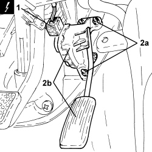

1068A21 ACCELERATOR PEDAL WITH INTEGRATED POTENTIOMETER - R.R. FOR RIGHT DRIVE VERSIONS
- Path
- Procedures > 10 ENGINE > 1068 ACCELERATOR CONTROLS > 1068A ACCELERATOR PEDAL CONTROL > 1068A21 ACCELERATOR PEDAL WITH INTEGRATED POTENTIOMETER - R.R. FOR RIGHT DRIVE VERSIONS
- Kind
- repair procedure (removal / refitting; the operation number is the code)
- Applies to
- engines: 2.2, 1.9 JTD 16v; all production periods
- Interactive page
- https://sloeber94.github.io/elrnDB-fCrm/en/#/194003994
Applies to: engines: 2.2, 1.9 JTD 16v; all production periods
 Removing
Removing
 Refitting
Refitting- Make sure that the ignition key is in the OFF position, then disconnect the battery terminal (-).
1. Disconnect the electrical connection from the accelerator pedal with built in potentiometer.
Description | Connector | |
|---|---|---|
1 | Accelerator pedal potentiometer | K055 |
2. Undo the nuts (2a) and remove the accelerator pedal with built in potentiometer (2b).

Applies to: engines: 2.2, 1.9 JTD 16v; all production periods
Refitting
Removing- Place the accelerator pedal with built in potentiometer back in its housing and secure it using the nuts.
- Connect the electrical connection to the accelerator pedal with built in potentiometer.
- Connect the negative battery terminal.